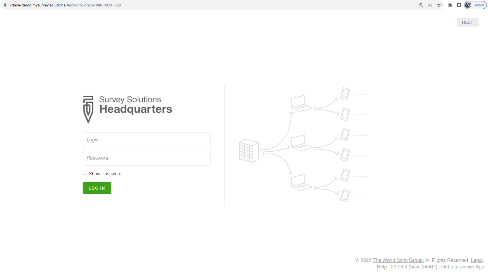
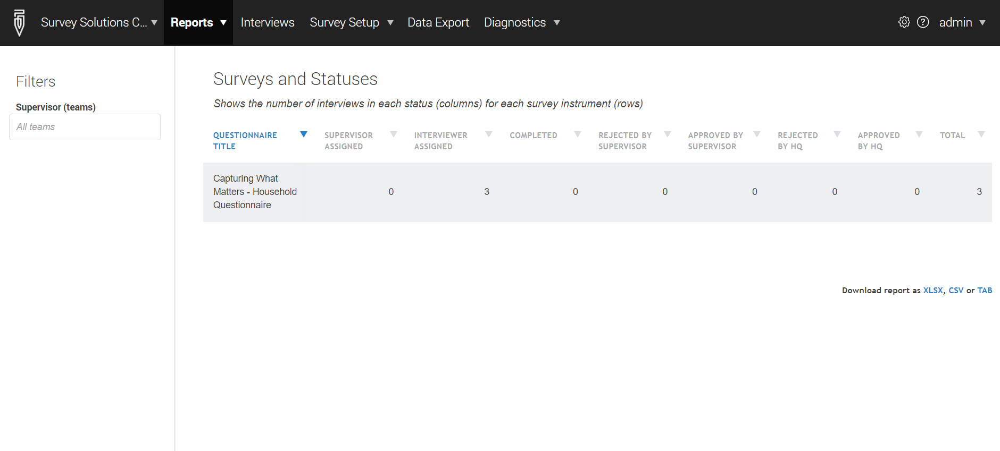

Server overview
Roadmap
Overview of UI
Demonstration of the whole game
Overview of UI
Login

Main page

Will only show components used in this module
Workspaces
Note what changes when workspace is changes:
- Name in UI
- Questionnaires in report
- URL in address bar
Users
Survey Setup
Demonstration of the whole game
Steps
Access the server
Create workspace
Create users
Import the questionnaire
Create the assignments
Import assignments
Access the server
Create workspace
Create users
Import the questionnaire
Create the assignments
TODO: Craft a simpler video. Meant this to cover creating the assignment file–but a quick, simplified overview to give taste. See the Create assignments section in review_zim_course/slides_not_on_zim_site/16_prepare_server.html#/create-assignments. Something like this:
- Get a template. See here
- Fill out template.
- Save as tab-delimited file.
Import assignments
TODO: Craft a video like this